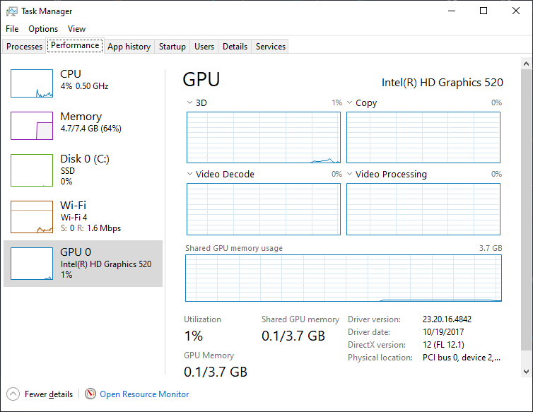

بررسی و عیبیابی یک سیستم کند
System Performance Analysis — شناسایی عوامل کاهش سرعت سیستم با استفاده از Task Manager و Resource Monitor
01 / هدف مأموریت
هدف این پروژه، شناسایی علت کندی عملکرد یک سیستم کامپیوتری و پیدا کردن برنامه یا فرایندی است که بیشترین فشار را به منابع سیستم وارد میکند. در این بررسی، میزان استفاده از پردازنده (CPU)، حافظه اصلی (RAM)، دیسک (Disk) و شبکه (Network) ارزیابی میشود تا منبع یا منابع اصلی کندی مشخص شوند.
02 / ابزارهای مورد استفاده
Task Manager: نمایش کلی میزان مصرف منابع سیستم و مدیریت برنامهها و فرایندهای در حال اجرا.
Resource Monitor: نمایش جزئیات دقیقتر مصرف CPU، Memory، Disk و Network به تفکیک هر فرایند.
03 / مراحل اجرا
- بررسی اولیه با Task Manager: کلیدهای Ctrl + Shift + Esc را فشار میدهیم. در تب Processes ستونهای CPU، Memory، Disk و Network را بررسی میکنیم و با انتخاب عنوان هر ستون، فرایندها را بر اساس بیشترین مصرف مرتب میکنیم.
- شناسایی منبع مشکلساز: در تب Performance نمودار هر منبع را مشاهده میکنیم. مصرف نزدیک به ۱۰۰ درصد، بهخصوص اگر ادامهدار باشد، میتواند نشانه فشار زیاد روی آن منبع باشد.
- بررسی برنامههای راهاندازی: در تب Startup برنامههایی را که هنگام شروع ویندوز اجرا میشوند بررسی میکنیم و موارد دارای اثرگذاری بالا (High impact) را شناسایی میکنیم.
- تحلیل دقیق با Resource Monitor: با فشردن Win + R و وارد کردن عبارت resmon ابزار را اجرا میکنیم. سپس تبهای CPU، Memory، Disk و Network را برای شناسایی فرایندهای پرمصرف بررسی میکنیم.
- رفع مشکل: پس از شناسایی عامل کندی، برنامهها یا فرایندهای غیرضروری را میبندیم، برنامههای غیرضروری Startup را غیرفعال میکنیم و در صورت نیاز اسکن ویروس، آزادسازی فضای دیسک یا افزایش RAM را در نظر میگیریم.
04 / یافتهها و تحلیل فنی
مقادیر جدول زیر نمونه هستند. هنگام اجرای واقعی پروژه باید اعداد مشاهدهشده در Task Manager و Resource Monitor جایگزین شوند.
| منبع | مقدار مشاهدهشده (نمونه) | وضعیت |
|---|---|---|
| CPU | 80% | بحرانی |
| RAM | 63% | بالا |
| Disk | 10% | عادی |
| Network | 5% | عادی |
- مصرف بالای CPU میتواند ناشی از اجرای همزمان چند برنامه سنگین و فرایندهای پسزمینه باشد.
- وجود چند برنامه با اثرگذاری بالا (High impact) در تب Startup میتواند زمان راهاندازی ویندوز را افزایش دهد.
- فعالیت زیاد دیسک و طولانی شدن صف دیسک (Disk Queue) در Resource Monitor میتواند نشانه فشار روی حافظه ذخیرهسازی باشد.
- در صورت پر شدن RAM، سیستم ممکن است از Page File روی دیسک استفاده کند؛ این وضعیت، بهویژه در سیستمهایی با حافظه ذخیرهسازی کند، میتواند عملکرد را کاهش دهد.
05 / مشکلات و راهحلها
| مشکل | راهحل پیشنهادی |
|---|---|
| برنامههای پرمصرف در حال اجرا | بستن برنامه یا فرایند غیرضروری با گزینه End Task |
| برنامههای زیاد در Startup | غیرفعال کردن برنامههای غیرضروری در بخش Startup |
| مصرف بالای RAM | بستن برنامههای اضافه و در صورت نیاز افزایش RAM |
| فشار روی دیسک | آزادسازی فضا، پاکسازی فایلهای موقت و در صورت امکان استفاده از SSD |
| احتمال وجود بدافزار | اجرای اسکن کامل با آنتیویروس |
06 / مستندات تصویری




07 / جمعبندی و یافتهها
کندی سیستم معمولاً میتواند نتیجه ترکیبی از چند عامل باشد؛ از جمله اجرای برنامههای پرمصرف، شلوغ بودن فهرست برنامههای Startup، استفاده زیاد از حافظه RAM و فشار روی دیسک. با بررسی مرحلهبهمرحله در Task Manager و Resource Monitor میتوان منبع اصلی مشکل را شناسایی کرد.
پس از بستن برنامههای غیرضروری و غیرفعال کردن موارد غیرضروری Startup، انتظار میرود مصرف منابع کاهش یابد و سرعت و پاسخدهی سیستم بهبود پیدا کند.